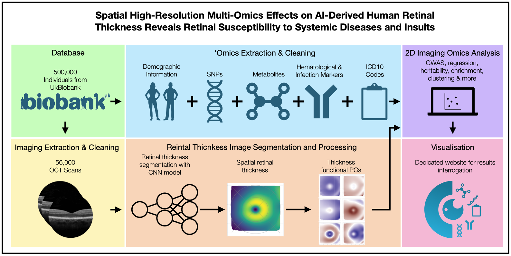

The retinomics portal is a web interface to explore the effect that different biological factors have on the morphology of the retina.
A variety of omics are included in this project including genomics, metabolomics, phenomics, other traits.
The current version is 1.0.0

To learn how these results were obtained please refer to the publication: Jackson VE, Wu Y, Bonelli R et al, Spatial high-resolution multi-omics effects on AI-derived human retinal thickness reveals retinal susceptibility to systemic diseases and insults